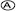

dependably
dependably|
• analogous • approximately • compel • compile • formidable • intrusive • periodic • prone |
• prophetic • proportions • readily • reliably • reluctantly • renown • revive • triumph |
analogous
n. | analogy |
adj. | alike in some way |
syn. | similar to |
The action of light waves is analogous to the action of sound waves.
The analogy between the behavior of the bacteria in the lab and in the human body is not clear.
approximately
adj. | approximate |
v. | approximate |
n. | approximation |
adv. | almost correct; not exact |
syn. | around |
There are approximately 500 billion galaxies in the universe.
The results of this study approximate those of a previous study.
compel
adv. | compellingly |
adj. | compelling |
v. | to make something happen by necessity or force |
syn. | obliged |
The representatives were compelled to vote in favor of the legislation despite their personal opposition to it.
The lawyer’s plea was made in a compelling manner.
compile
n. | compilation |
v. | to collect |
syn. | assemble |
The film club asked each of its members to compile a list of his or her favorite movies.
The book is a compilation of Shakespeare’s plays.
formidable
adv. | formidably |
adj. | difficult; causing worry or fear |
syn. | overwhelming |
Their formidable opponents gave no sign of weakness.
The man’s voice echoed formidably throughout the hallway.
intrusive
adv. | intrusively |
v. | intrude |
n. | intrusion |
n. | intruder |
adj. | the state of being inside when not desired to be there by others |
syn. | annoying |
The intrusive bacteria caused his condition to worsen.
The intrusion of the hazardous gas made it difficult to live in the house.
periodic
adj. | periodical |
adv. | periodically |
adj. | occurring at specific, determined periods of time |
syn. | regularly |
Periodic payments must be made on home loans.
Some people need periodic doses of medicine.
prone
adj. | likely to do something |
syn. | inclined to |
Most liquids are prone to contract when frozen.
She is prone to study hard the night before her tests.
prophetic
adv. | prophetically |
v. | prophesy |
n. | prophecy |
n. | prophet |
adj. | correctly telling about future events |
syn. | predictive |
His prophetic powers were investigated by a team of psychologists.
The brilliant student fulfilled his teacher’s prophecy that he would be a successful doctor.
proportions
adv. | proportionally |
adj. | proportional |
adj. | proportionate |
adv. | proportionately |
n. | the relationship of size or importance when compared to another object or person |
syn. | dimensions |
The goal of establishing a space station will take a team effort of major proportions.
The pilot’s salary is proportional to that of pilots of other airlines.
readily
adj. | ready |
v. | ready |
n. | readiness |
adv. | willingly; easily |
syn. | freely |
The workers readily complained about the food in the cafeteria.
Her readiness to cooperate was an important factor in the investigation.
reliably
adj. | reliable |
adj. | reliant |
v. | rely |
n. | reliability |
n. | reliance |
adv. | in a trusted way |
syn. | dependably |
An appliance must perform its task reliably to be popular with consumers.
Satellite photos show the smallest details with great reliability.
reluctantly
adj. | reluctant |
n. | reluctance |
adj. | unwillingly |
syn. | hesitatingly |
Although not completely satisfied with the contract, the officials reluctantly agreed to sign it.
The electrician was reluctant to estimate the cost of the repair work.
renown
adj. | renowned |
n. | fame |
syn. | prominence |
This school is of great renown.
The renowned conductor made a guest appearance at the concert.
revive
n. | revival |
adj. | revived |
v. | to restore to life or bring back into memory |
syn. | renew |
The students revived the old tradition of having a homecoming dance.
Old plays are sometimes revived by applying modern interpretations to their content.
triumph
adv. | triumphantly |
adj. | triumphant |
adj. | triumphal |
v. | triumph |
n. | a victory; a success |
syn. | achievement |
His career was characterized by one triumph after another.
He triumphed over all of his difficulties.
MATCHING
Choose the synonym.
1. intrusive
(A) inactive
(B) intricate
(C) predictive
(D) annoying
2. obliged
(A) distorted
(B) dependable
(C) compelled
(D) settled
3. assemble
(A) compel
(B) accelerate
(C) compile
(D) renew
4. formidable
(A) predictive
(B) overwhelming
(C) functional
(D) practical
5. similar to
(A) unlike
(B) analogous
(C) archaic
(D) prone
6. around
(A) obviously
(B) likely
(C) entirely
(D) approximately
7. hesitatingly
(A) reluctantly
(B) readily
(C) compellingly
(D) practically
8. achievements
(A) triumphs
(B) phenomena
(C) dimensions
(D) approximation
9. regularly
(A) routinely
(B) actually
(C) periodic
(D) gradually
10. renown
(A) domination
(B) prophecy
(C) prominence
(D) position
LESSON 23—MULTIPLE–CHOICE TEST QUESTIONS
1. New annual growth of trees produces growth rings. In most instances, the age of a tree can be reliably determined by counting the rings of a trunk’s cross section. Most of the growth ring wood cells are dead. Only young xylem cells, those that grow during the current growing season, are alive. As a result, the ratio of dead to living wood cells increases as the girth of the tree increases.
The word reliably in the passage is closest in meaning to
 periodically
dependably
 approximately
approximately
 ordinarily
ordinarily
2. Lightships and buoys have an important function in coastal waters. They mark channels and thereby safely guide passing ships around hazards or shallow waters. Their great advantage is mobility, making them readily redeployable to meet changing conditions. For example, submerged hazards such as sandbars can change location rapidly under the influence of the sea. The use of buoys makes it possible to efficiently mark safe channels at all times.
The word readily in the passage is closest in meaning to
freely
reluctantly
repeatedly
occasionally
3. The construction of the Saint Lawrence Seaway was an undertaking of great proportions. Constructing a link between the Great Lakes and the Atlantic seaboard had been proposed since 1535. Locks built in the 1800s by Canada became operational in 1901 on the upper Saint Lawrence River. But this original seaway was not deep or wide enough for modern ships. Canada and the United States constructed the new seaway, which became operational in 1959.
The word proportions in the passage is closest in meaning to
triumphs
renown
dimensions
strength
4. In European folklore, mermaids are mythical beings who, like sprites, have magical and prophetic powers. They love music and song. Though very long-lived, they are mortal and have no souls. Although sometimes kindly, mermaids are generally dangerous to man. Their gifts have typically brought misfortune, and, if offended, they have caused floods or other disasters. To see one on a voyage is an omen of shipwreck.
The word prophetic in the passage is closest in meaning to
formidable
intrusive
predictive
renowned
5. In Western cultures, the absence of a formal definition of responsibilities has produced an ambiguous and often conflicting set of expectations for young people. At the same time, young people are prone to experience problems of peer pressure. They are told to behave maturely, while being denied access to the rights and privileges of adults.
The word prone in the passage is closest in meaning to
obliged
positioned
cautioned
inclined
6. Among the great orchestras of the world, the Philadelphia Orchestra stands out for several reasons. One is the overall quality of its musicians, although it is especially renowned for its violin players. Another is the orchestra’s famous recordings of nineteenth-century music, including the nine symphonies of Ludwig von Beethoven. A third is the orchestra’s many international concert tours. For example, it was the first U.S. orchestra to visit China.
In saying that this orchestra is especially renowned for its violinists, the author means that it
has an unusual violin section.
is famous for the violin players.
has made a lot of recordings.
pays the violinists more money.
7. The body of scales or bracts of a cone contains the reproductive organs of certain flowerless plants. The cone, a distinguishing feature of pines and other evergreens, is crudely analogous to the flowers of other plants.
The word analogous in the passage is closest in meaning to
apparent
constant
speculative
similar
8. Most physicians participate in continuing education to keep up with the massive amount of information being discovered each year in their fields. Many states require that physicians periodically prove that they have actively participated in continuing medical education in order to maintain their certification to practice medicine.
The word periodically in the passage is closest in meaning to
nominally
partially
persistently
regularly
9. Peace pipes are the large, ornately decorated tobacco pipes of the Indians of eastern North America. They functioned as symbols of truce and were ceremonially smoked for purposes of binding or renewing alliances. Peace pipes attained so much symbolic importance that it was thought that smoking the pipe with others compelled everyone present to be united in friendship.
The word compelled in the passage is closest in meaning to
obliged
sheltered
shifted
dependable
10. The Spanish conquerors attempted to replace Aztec medicine with their own. When Aztec medical personnel resisted they were killed and Spanish medicine intruded into Aztec culture. However, some elements of Spanish medicine were compatible with the folk medical practices and became part of a new folk system. Mexican folk medicine thrived, yet there were many regional differences.
The word intruded in the passage is closest in meaning to
enacted
imported
emphasized
imposed